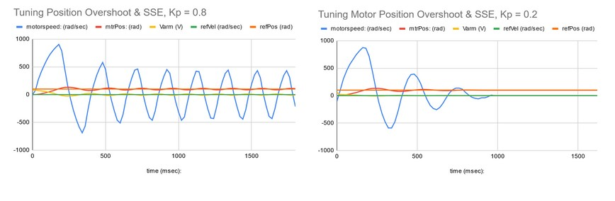
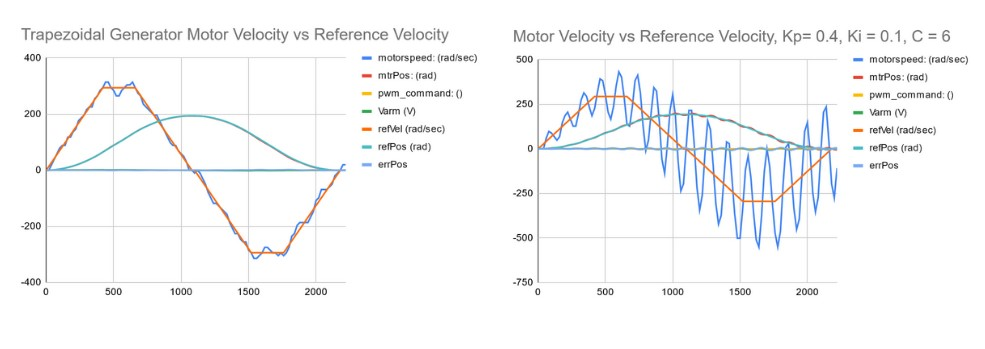
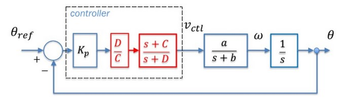
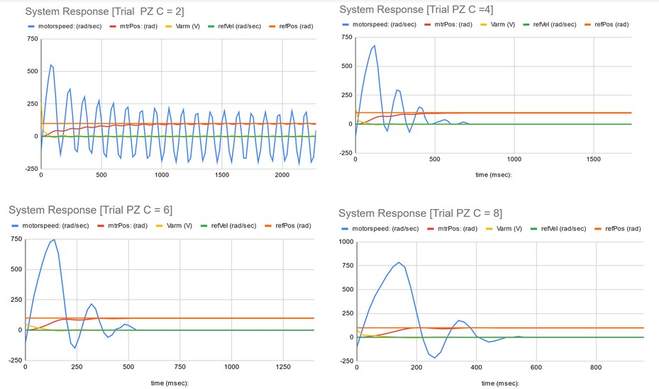
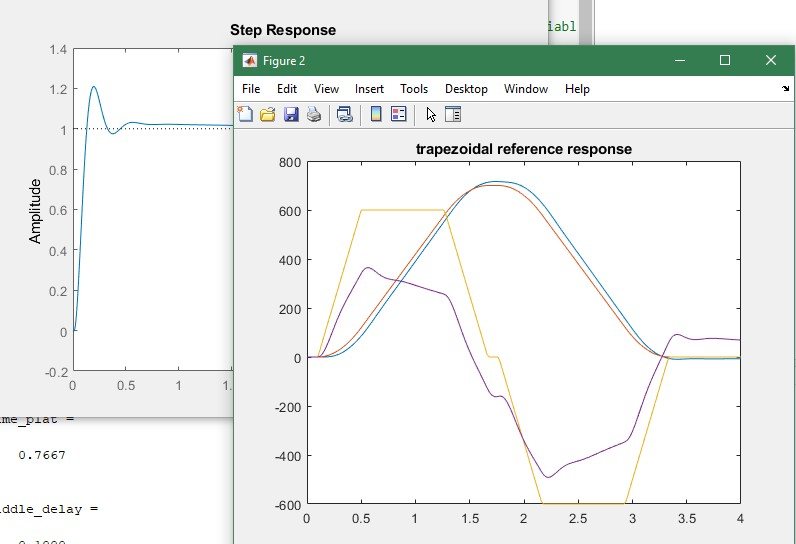

Prior to this project, I was familiar with the requirements of building a physical pendulum/lever system, as I had built several trebuchets in high school. Unlike a trebuchet hoever, the fine tuning of the ball and beam system is the controls loop that wraps arduino system data, and the finetuning is done through matlab and analysis of data via excel and matlab analysis.
The purpose of this project is to use a cascaded control loop to optimize a physical balancing beam and ball system. Utilizing several controls engineering techniques in an iterative approach to improve the system, small improvements were met with analysis of resulting issues, and optimization. The control techniques progressively built up to a final system including optimizing plant parameters, Pole-Zero compensation, Lead/Lag compensation, and a PID control loop.
Analyzing the system's closed loop step response allows for tuning motor characteristics before adding additional controls. adjusting the value of Kp (proportional gain) for the system to minimise position overshoot and steady state error is a key step to building a solid foundation other controllers can be built around.
Figure 2: System response graphs showing the effect of changing motor parameter Kp on the closed loop step response
As can be seen in the graph comparisons above, adjusting the proportional gain Kp can have a large impact on the system's position overshoot steady state error. Practically on the Ball and beam system, this looks like some pretty intense wobbling and overcorrection, in this case over a full second of Steady State wobble. Choosing proportional gain values proved to be tricky, as each value has pros and cons. While the higher value of kp may produce a lower RMS error in the system, when Feedforward and Pole Zero cancellation were added to the system it lost stability and resulted in a large amount of ringing. A key takeaway was to run many trials with each parameter configuration to be able to reference as you progress. Unorganized or unsaved data is not usable, and with a large number of datapoints to keep track of, ensures a re-do.
The iterative nature of this project involves some back and forth adjustments even if good choices are made. The graphs below illustrate using a solid choice of proportional gain, Kp=0.4 from the earlier closed loop step response, after adding Feedforward and Pole Zero compensation to the system.
Figure 3: two graphs showing the effects of changing proportional gain in a system with multiple control loops
The only system difference between the image on the left and the image on the right is the value of proportional gain Kp. If the only data to reference were the closed loop response from earlier, the value on the right Kp = 0.4 could have seemed like a good choice. However, the stability of the system is severley compromised as can bee seen by the large margin of position overshoot and overcompensation. The left trial of Kp = 0.2 was not necessarily the best proportional gain trial from the closed loop step response tests, but when coupled with Feedforward and Pole Zero compensation it remains stable, making it retrospectively the better choice. This can be pulled graphically from the data via the RMS error value, highlighting the importance of pulling information from the data collection that actually describe whats happening in the system. A datapoint like the "average error" of the motor position compared to the motor reference point might sound like useful information, but due to the nature of the system, it's not a useful number. The motor position overshoot and undershoot/compensation to try and match the reference position is split close to evenly, so the average cancels itself out and doesn't describe what is happening in the system. In this case, the RMS error is the useful datapoint, because it better accounts for the cyclical behavour of the motor position - motor reference relationship.
Pole Zero cancellation reduces the postion overshoot without needing to lower feedback gains.
Figure 4: Reference of partial control loop with Pole Zero Compensator in red. Parameter C is the ‘zero’ that is being moved in figure 6 above.
Adding additional controls systems like Feedforward and Pole Zero Cancellation also require tuning.
Figure 5: Collection of system response graphs changing zero location parameter C as part of pole-zero compensation.
The time it takes for the system to reach steady state is changed by shifting the zero location. The fastest response time is desirable, but a lower value of overshoot is also necessary to avoid instbility.
While it appeared that digital signal processing techniques may have been useful in reducing signal error, it didn't prove to be the case. An attempt to throw a low pass filter on the sensor input did not result in lower steady state error. A better choice for reducing steady state error is a lag compensator.
modelling the system in Matlab eases some of the burden of iterative trials on the physcal build. Since the motor is sensitive, trying multiple control loop cascades without having to actually run them allows for more trial and error, even if it was sometimes more error than not.
Overall this project was a big push in developing my intuition for system modeling, and improved my confidence in my ability to weigh options for system parameters and choose accordingly.
[ description ]